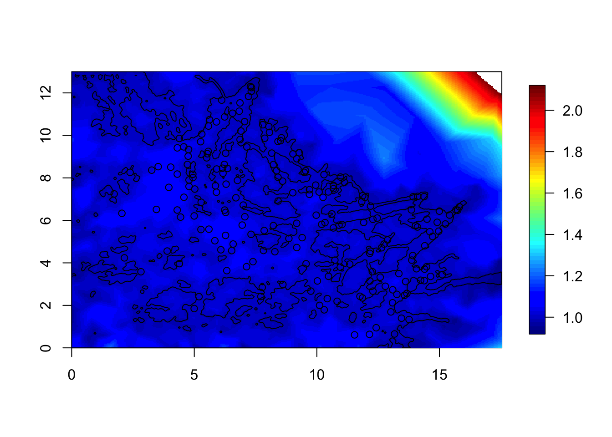

Visualising spatial prior models
Haakon Bakka
BTopic105 updated 8th March 2017
1 About
This topic covers how to visualize spatial models near a coast. The method for visualizing spatial models can be used for other models. The knowledge we gain on the spatial models we are looking at is useful when using these models. Note that this is only about the prior model, before we have introduced data!
This topic is out of date (and removed from the list of all topics).
1.1 Initialisation
We load the libraries and functions we need. You may need to install these libraries (Installation and general troubleshooting). Feel free to save the web location where the data is as an R-file on your computer. We also set random seeds to be used later.
library(INLA)
library(sp)
library(fields)
set.seed(2016)
set.inla.seed = 20161.2 Download data
dir.create("data/")
download.file(url = "https://haakonbakkagit.github.io/data/WebSiteData-Archipelago.RData", destfile = "data/WebSiteData-Archipelago.RData")1.2.1 Load data
## Load data
load(file = "data/WebSiteData-Archipelago.RData")
# - if you have saved the file locally
## What is loaded
# - poly.water is our study area
# - df is our dataframe to be analysed
# - dat is the orginial dataframe
str(poly.water, 1)## Formal class 'SpatialPolygons' [package "sp"] with 4 slots1.2.2 Data citations
For a description of the data see (Kallasvuo, Vanhatalo, and Veneranta 2016). Data collection was funded by VELMU and Natural Resources Institute Finland (Luke).
1.3 Dependency BTopic104
The following code is copy-pasted from the dependency. You probably want to read this dependency topic.
max.edge = 0.95
mesh1 = inla.mesh.2d(loc=cbind(df$locx, df$locy),
max.edge = max.edge)
plot(mesh1, main="1st attempt"); points(df$locx, df$locy, col="blue")max.edge = 0.95
# - as before
bound.outer = 4.6
# - as before
mesh4 = inla.mesh.2d(boundary = poly.water,
loc=cbind(df$locx, df$locy),
max.edge = c(1,5)*max.edge,
# - use 5 times max.edge in the outer extension/offset/boundary
cutoff = 0.06,
offset = c(max.edge, bound.outer))
plot(mesh4, main="4th attempt", lwd=0.5); points(df$locx, df$locy, col="red")1.4 Weak dependency BTopic103
You may want to read BTopic103 also, but it is not strictly necessary.
local.plot.field = function(field, mesh, xlim, ylim, ...){
stopifnot(length(field) == mesh$n)
# - error when using the wrong mesh
if (missing(xlim)) xlim = poly.water@bbox[1, ]
if (missing(ylim)) ylim = poly.water@bbox[2, ]
# - choose plotting region to be the same as the study area polygon
proj = inla.mesh.projector(mesh, xlim = xlim,
ylim = ylim, dims=c(300, 300))
# - Can project from the mesh onto a 300x300 grid
# for plots
field.proj = inla.mesh.project(proj, field)
# - Do the projection
image.plot(list(x = proj$x, y=proj$y, z = field.proj),
xlim = xlim, ylim = ylim, ...)
}2 How to compute the SD and Correlation plots
In INLA, we always talk about precision matrices \(Q\), which are the inverse of the covariance matrices. To compute standard deviations, we first have to compute parts of \(\sigma = Q^{-1}\) through inla.qinv. The parts we compute always include the diagonal. The marginal standard deviations sd are just the square root of elements on this diagonal.
To compute the correlation, we need to first decide on a reference location. The correlation is then computed between the field at any point and this reference location. You may wait with studying this function until you see the example.
local.find.correlation = function(Q, location, mesh) {
sd = sqrt(diag(inla.qinv(Q)))
# - the marginal standard deviations
A.tmp = inla.spde.make.A(mesh=mesh, loc = matrix(c(location[1], location[2]),1,2))
# - create a fake A matrix, to extract the closest mesh node index
id.node = which.max(A.tmp[1, ])
# - index of the closest node
print(paste('The location used was c(',
round(mesh$loc[id.node, 1], 4), ', ',
round(mesh$loc[id.node, 2], 4), ')' ))
# - location of the closest node
# - should be close to the location input
# - sometimes used to plot a black dot
## Solve a matrix system to find the column of the covariance matrix
Inode = rep(0, dim(Q)[1]); Inode[id.node] = 1
covar.column = solve(Q, Inode)
corr = drop(matrix(covar.column)) / (sd*sd[id.node])
return(corr)
}3 Example 1: The bad mesh mesh1
Here, we set up the SPDE based Matérn model in INLA. (If you do not know what this means, think of it as a common spatial model.)
spde = inla.spde2.pcmatern(mesh1, prior.range = c(5, .5), prior.sigma = c(.5, .5))
# - ignore the priors, they are not used at all (in this topic)
Q = inla.spde2.precision(spde, theta = c(log(4),log(1)))
# - theta: log range and log sigma (standard deviation parameter)
sd = sqrt(diag(inla.qinv(Q)))
local.plot.field(sd, mesh1)
points(df$locx, df$locy)corr = local.find.correlation(Q, loc = c(16.4, 6.9), mesh1)## [1] "The location used was c( 16.5211 , 6.9302 )"local.plot.field(corr, mesh1, zlim=c(0.1, 1))
points(16.52, 6.93)corr = local.find.correlation(Q, loc = c(8, 7), mesh1)## [1] "The location used was c( 7.6179 , 6.7696 )"local.plot.field(corr, mesh1, zlim=c(0.1, 1))
points(7.62, 6.77)This correlation is slightly smaller than the previous figure. [The difference was smaller than I expected.] For the model to be the stationary Matérn model, the correlation surfaces must look the same (when they are inside the study area).
4 The stationary model on a good mesh respecting the coastline
spde = inla.spde2.pcmatern(mesh4, prior.range = c(5, .5), prior.sigma = c(.5, .5))
# - You can ignore the prior, we do not use that
Q = inla.spde2.precision(spde, theta = c(log(4),log(1)))
# - log range and log sigma (standard deviation)sd = diag(inla.qinv(Q))
local.plot.field(sd, mesh4)
points(df$locx, df$locy)
plot(poly.water, add=T)
We see that the standard deviation is near 1 in the water, but not far inland. However, we only care about the water region.
Similarly, we plot the correlation.
corr = local.find.correlation(Q, loc = c(7,10.3), mesh4)## [1] "The location used was c( 6.9022 , 10.2071 )"local.plot.field(corr, mesh4, zlim=c(0.1, 1))
points(6.90, 10.21)
plot(poly.water, add=T)Here, we see that the values in water are correlated to the values on land. This is no problem! The field on land is just a computational tool; it is never used. In other words, the likelihood on land is always 100% chance of getting 0 fish, independent on the predictor there.
Let us therefore stop plotting the field, and correlation etc on land.
4.1 The polygons for mesh4
The problem with using the polygon poly.water for plotting is that we have re-defined the polygon when we created the mesh. It has been simplified somewhat.
The following are code from the Barrier model example Topic 103.
## Remove this and update the code to use the new functionality in INLA
# - Use inla.barrier.pcmaterns instead of the code below
source("functions-barriers-dt-models-march2017.R")mesh = mesh4
tl = length(mesh$graph$tv[,1])
# - the number of triangles in the mesh
posTri = matrix(0, tl, 2)
for (t in 1:tl){
temp = mesh$loc[mesh$graph$tv[t, ], ]
posTri[t,] = colMeans(temp)[c(1,2)]
}
posTri = SpatialPoints(posTri)
# - The positions of the triangles
water = over(poly.water, SpatialPoints(posTri), returnList=T)
# - checking which mesh triangles are inside the normal area
water = unlist(water)
Omega = list(water, setdiff(1:tl, water))
Omega.SP = dt.polygon.omega(mesh, Omega)## Warning in RGEOSUnaryPredFunc(spgeom, byid, "rgeos_isvalid"): Self-
## intersection at or near point 0 0## mesh.polys is invalid## Warning in gUnaryUnion(mesh.polys): Invalid objects found; consider
## using set_RGEOS_CheckValidity(2L)## Warning in RGEOSUnaryPredFunc(spgeom, byid, "rgeos_isvalid"): Self-
## intersection at or near point -4.5999999999999996 -0.91499688999999995## mesh.polys is invalid## Warning in gUnaryUnion(mesh.polys): Invalid objects found; consider
## using set_RGEOS_CheckValidity(2L)# - creates polygons for the different areas
# - - the first is water/normal area
# - - the second is Barrier area
str(Omega.SP, 1)## List of 2
## $ :Formal class 'SpatialPolygons' [package "sp"] with 4 slots
## $ :Formal class 'SpatialPolygons' [package "sp"] with 4 slotsNow, we can plot the correlation only over water.
corr = local.find.correlation(Q, loc = c(7,10.3), mesh)## [1] "The location used was c( 6.9022 , 10.2071 )"local.plot.field(corr, mesh, zlim=c(0.1, 1))
points(6.90, 10.21)
plot(Omega.SP[[2]], add=T, col="grey")# - adding the land polygon filled with grey
# - this hides the field on landThis looks better. But, something is weird here! Let us look closer…
local.plot.field(corr, mesh, xlim = c(5, 9), ylim = c(8, 12), zlim=c(0.1, 1))
points(6.90, 10.21)
plot(Omega.SP[[2]], add=T, col="grey")The model is stationary, implying that all parts of space is treated in the same way. And so, strength is borrowed from one side of a land barrier to another. As discussed in (Bakka et al. 2016) this usually makes no sense.
5 A secret model - visualising the unknown
We are going to take some spatial (prior) model and pretend we know nothing about it. The idea is to understand how to visualize and interpret it.
The model has two parameters, one sigma-parameter (scaling parameter) and one spatial range parameter.
First we need some setup.
Q.function = dt.create.Q(mesh, Omega, fixed.ranges = c(NA, 0.5))
# - the 0.5-fixed range is for the barrier area
# - - it is not sensitive to the exact value here,
# just make it "small"The code to produce \(Q\) is
r = 3
# - some chosen range (in the water area)
sigma = 1
# - some chosen sigma scaling
Q = Q.function(theta = c(log(sigma), log(r)))
# - the precision matrix for fixed ranges
# - Q is a function of the hyperparameters theta = c( log(sigma), log(range1), log(range2),...)In total, \[Q = Q(\sigma, r) = \sigma^{-2} Q(r).\]
This is written as a function, since when you know both \(r\) and \(\sigma\), you know \(Q\). (The notation in the above equation is a bit sloppy.)
5.1 The claim
I (who created this \(Q\)) claim that \(\sigma\) gives the marginal standard deviation, and that the range parameter \(r\) does not affect the marginal standard deviation. I also claim that this range is roughly the distance at which correlation drops to 0.13 when moving over water.
The question now is “How can we check my claim?”
5.2 Studying the scaling parameter \(\sigma\)
The first thing we want is to check is if the \(\sigma\) parameter is the same as the marginal standard deviation. First we need to check if the \(Q\) with \(\sigma=1\) has standard deviation 1.
Q = Q.function(theta = c(log(1), log(r)))
sd = diag(inla.qinv(Q))
local.plot.field(sd, mesh)
plot(Omega.SP[[2]], add=T, col="grey")
# - we only care about our study areaIt turns out that the marginal standard deviation sd is not constant. However, it is close to 1 in most of our study area, so the \(\sigma\) parameter is sensible.
Additionally, we see, from the way \(Q\) is created, that the covariance matrix is scaled by \(\sigma^2\), i.e. that the field is scaled by \(\sigma\). Hence, e.g. when \(\sigma=7\) the sd will be close to 7 in our study area. Feel free to check this.
The last thing that remains is to use different ranges, and check that sd does not change too much. Feel free to check this.
5.3 Studying the range parameter
The claim is that the correlation distance should be roughly equal to the range. To check this, we can select many different locations loc in space, and different ranges r and look at how big the radius of the correlation circle is (truncated at 0.13).
r = 4
Q = Q.function(theta = c(log(1), log(r)))
corr = local.find.correlation(Q, loc = c(5,5), mesh)## [1] "The location used was c( 5.0402 , 5.003 )"local.plot.field(corr, mesh, zlim=c(0.13, 1))
plot(Omega.SP[[2]], add=T, col="grey")r = 3
Q = Q.function(theta = c(log(1), log(r)))
corr = local.find.correlation(Q, loc = c(5,9), mesh)## [1] "The location used was c( 4.903 , 8.906 )"local.plot.field(corr, mesh, zlim=c(0.13, 1))
plot(Omega.SP[[2]], add=T, col="grey")
These were just two example plots. We see that the claim is correct for these two plots. Feel free to plot more plots and check.
5.4 Studying the spatial structure
Now that we have checked that the parameters do as we were told, it is time to investigate how the spatial model is smoothing / borrowing strength.
One way to do this is to plot the spatial correlation with respect to many different locations. Here, I expect you to use the above code, and change loc and range. If you suddenly see nothing, it may be because you have put the loc on land (or outside the mesh).
Summarising the results: (that you get when performing this experimentation)
- The model does not smooth across land
- The dependencies can go around sharp corners/features
- The “ranges around land” seems to be of similar length to “the range in water”, but this is not true for small gaps
- A more narrow passage gives less dependency (between the values at either side of the passage)
5.5 But, correlation?
There is one problem that we have not discussed, namely that correlation is not a good scale. What is does it mean to be “not a good scale”? That is a scale where equal increments does not represent equal changes. For correlation this is seen e.g. in that the difference in behavior between correlation 0 and 0.1 is almost indistinguishable, but the difference in behavior between correlation 0.7 and 0.8 is significant, and the difference between correlation 0.9 and 1 is enormous.
There may be another way to think about the spatial dependency/correlation, on a scale that is sensible. Unfortunately I have not had time to about this yet. [TODO long term: Create topic on “smoothed white noise”]
5.6 Which model this is
This model is the Barrier model, devised to give physically realistic inference, by avoiding smoothing across land, see (Bakka et al. 2016).
6 Comments
6.1 Does the model depend on the study area?
Yes. In general, when making a model you have to know roughly the area where you allow predictions to happen. Inside this area, your model must be sensible, outside of this area, you don’t have to be careful about how the model behaves.
References
Bakka, H., J. Vanhatalo, J. Illian, D. Simpson, and H. Rue. 2016. “Accounting for Physical Barriers in Species Distribution Modeling with Non-Stationary Spatial Random Effects.” ArXiv preprint arXiv:1608.03787. Norwegian University of Science; Technology, Trondheim, Norway.
Kallasvuo, Meri, Jarno Vanhatalo, and Lari Veneranta. 2016. “Modeling the Spatial Distribution of Larval Fish Abundance Provides Essential Information for Management.” Canadian Journal of Fisheries and Aquatic Sciences, no. ja.